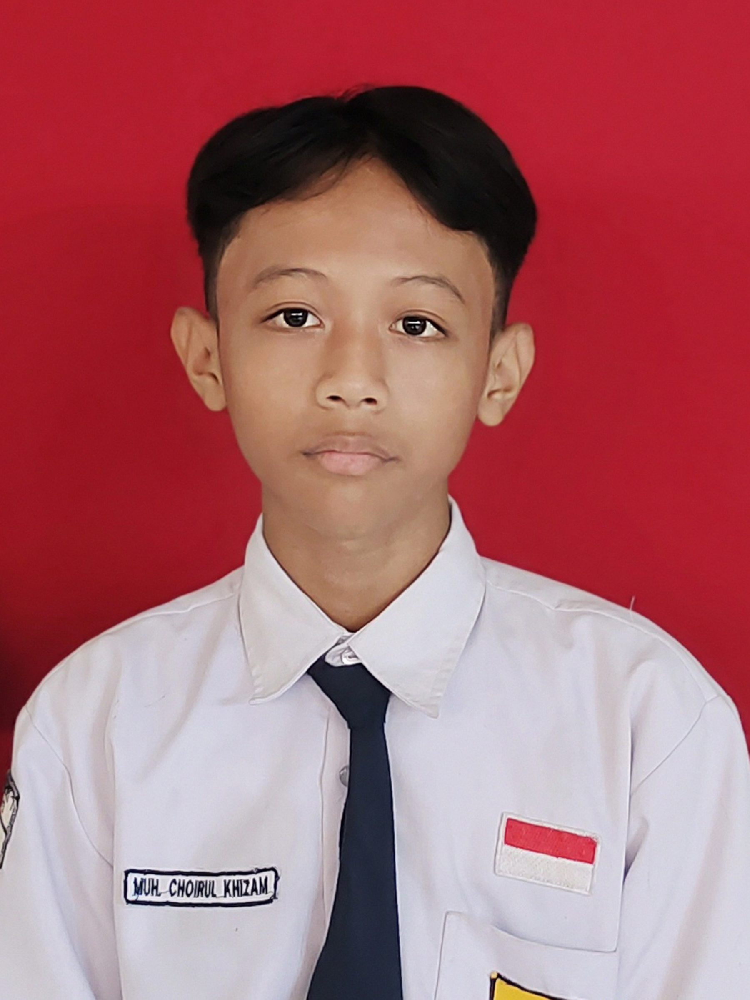
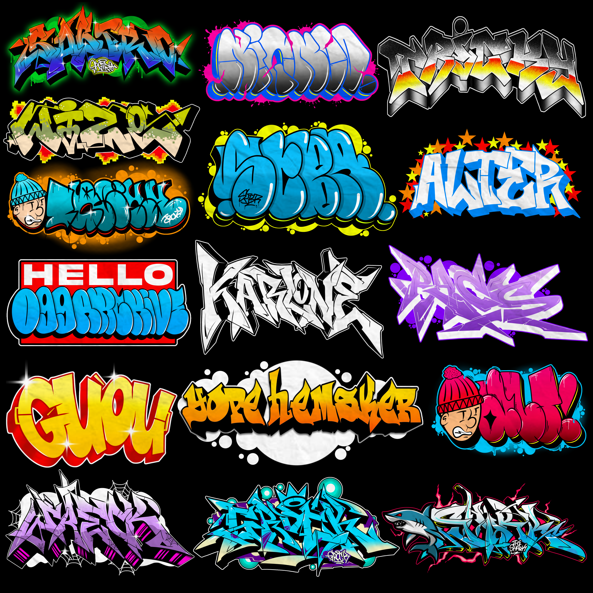
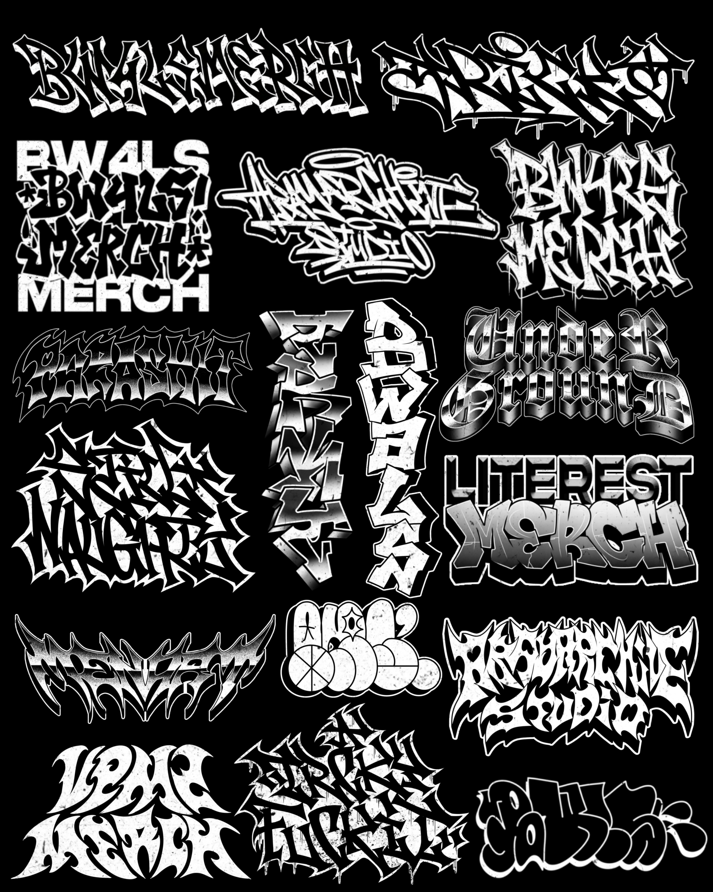

- Pelajar SMK -
Selamat datang di Portofolio Dan saya. Saya adalah M. Choirul Khizam, seorang individu yang berdedikasi dan bersemangat dalam menjelajahi frontier teknologi. Dengan latar belakang pendidikan di Teknik Komputer dan Jaringan, saya memiliki hasrat kuat untuk desain, kreativitas, dan membangun solusi digital inovatif. Portofolio ini adalah antarmuka menuju perjalanan edukasi dan pengembangan keahlian saya, mencakup visi, misi, dan pencapaian.
Nama Lengkap: M. Choirul Khizam
Tanggal Lahir: Pekalongan, 31 Agustus 2009
Kewarganegaraan: Indonesia (ID)
Alamat: Desa Pacar RT/RW 4/1, Jalan Ky. Khaeron, Kabupaten Pekalongan, Jawa Tengah
Email: zamxtjktt222@gmail.com
Telepon: 085879562839
Menjadi pelopor teknologi muda yang kompeten dan adaptif di era revolusi digital, dengan kemampuan menciptakan solusi inovatif, mendorong batasan teknologi, dan memberikan dampak positif pada ekosistem digital global.
"Setiap langkah kecil Hari Ini,perlahan akan membawa kita menuju Mimpi Besar di Masa Depan. //
Saya memulai perjalanan pendidikan di bangku sekolah dasar, kemudian melanjutkan ke SMP Negeri 1 Tirto. Di sana, saya mulai tertarik pada dunia teknologi, khususnya komputer dan jaringan. Ketertarikan ini mendorong saya untuk memilih jurusan Teknik Komputer dan Jaringan (TKJ) di SMK Ma’arif NU Tirto, Kabupaten Pekalongan. Saat ini, saya fokus untuk mengembangkan keahlian teknis dan berpartisipasi aktif dalam berbagai kegiatan untuk mengasah kreativitas dan kemampuan problem-solving saya.
Berikut adalah analisis sederhana dari data pribadi yang telah dikumpulkan.
| Analisis Data Pribadi | Hasil Perhitungan |
|---|---|
| Rata-rata Aktivitas per Minggu | 1.43 aktivitas/hari |
| Modus Hobi (Paling Sering) | Mendesain Logo |
| Persentase Prestasi Akademik | 33.33% |
Diagram ini menunjukkan bahwa prestasi non-akademik saya mendominasi, mencerminkan minat dan pencapaian yang kuat di luar bidang akademis formal.
Diagram batang ini menggambarkan frekuensi hobi per minggu. Hobi yang paling sering dilakukan (modus) adalah Mendesain Logo.
Diagram kurva ini menunjukkan tren frekuensi hobi per minggu.
Rekam jejak keberhasilan saya di bidang desain grafis dan teknologi:
Berikut adalah beberapa contoh proyek desain logo yang telah saya kerjakan sebagai freelancer. Setiap desain mencerminkan pendekatan unik untuk memenuhi kebutuhan visual klien.

Desain logo ini menggabungkan gaya graffiti modern dengan elemen tipografi tebal dan dinamis, menciptakan identitas visual yang berani, ekspresif, dan penuh energi. Sentuhan warna kontras dan bentuk yang mengalir memberikan kesan urban, kreatif, serta merepresentasikan kebebasan berekspresi dalam seni jalanan..

Desain logo ini menggabungkan gaya graffiti hardcore dengan nuansa monokrom hitam dan putih, menonjolkan kesan tegas, garang, dan penuh karakter. Garis tajam serta tipografi bertekstur kasar menghadirkan energi mentah khas street art, sekaligus memberikan identitas visual yang kuat dan berani..
Untuk melihat lebih banyak karya, silakan hubungi saya melalui email.